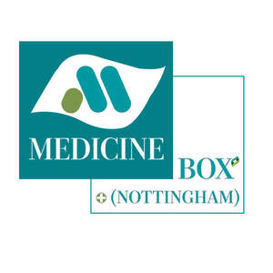

Trade Mark Journal No.2026/008 20 February 2026
UK00004334419 3 February 2026 (3,5,10,35,40,42,44)

- Class 3
- Beauty care cosmetics; Beauty serums; Beauty lotions; Beauty creams; Beauty soap; Beauty milk; Beauty gels; Beauty milks; Cosmetic products in the form of aerosols for skincare; Beauty creams for body care; Beauty balm creams; Distilled oils for beauty care; Beauty masks; Masks (Beauty -); Beauty serums with anti-ageing properties; Beauty preparations for the hair; Beauty tonics for application to the body; Beauty care preparations; Cosmetic products in the form of aerosols for skin care; Beauty tonics for application to the face; Perfumery products; Cosmetic products for the shower; Facial beauty masks; Skincare cosmetics; Natural cosmetics; Body cleaning and beauty care preparations; Sets of cosmetic oral care products; Skin care products for animals; Baby care products (Non-medicated -); Eye care products, non-medicated; Soap products; Nutritional creams (Non-medicated -); Cleansing products for the eyes; Cosmetics.
- Class 5
- Dermatological pharmaceutical products; Pharmaceutical products for skin care for animals; Pharmaceutical products for the treatment of cancer; Pharmaceutical products for ophthalmological use; Pharmaceutical products for the treatment of depression; Pharmaceutical preparation for skin care; Dietetic products for medical purposes; Anti-infective products for veterinary use; Pharmaceutical products for the treatment of viral diseases; Pharmaceutical products for the treatment of bone diseases; Radiopharmaceutical products; Medicinal healthcare preparations; Feminine hygiene products; Pharmaceuticals for the treatment of erectile dysfunction; Pharmaceutical for the treatment of erectile dysfunction; Capsules for medicines; Dragees [medicines]; Tonics [medicines]; Gelatin capsules for pharmaceuticals; Antifungal medication; Acne medications; Acne medication; Homeopathic medicines; Antiallergic medicines; Pharmaceutical preparations for inducing erections; Sulfonamides [medicines]; Acne creams [pharmaceutical preparations]; Acne cream [pharmaceutical preparations]; Sulphonamides [medicines]; Sulphonamides as medicines; Ginseng capsules for medical purposes; Empty capsules for pharmaceuticals; Decongestant capsules; Capsules for pharmaceutical purposes; Erythromycin preparations; Pills for tinnitus treatment; Pharmaceutical creams; Constipation (Medicines for alleviating -); Medicines for alleviating constipation; Allergy capsules; Herbal male enhancement capsules; Antioxidant pills; Homeopathic pharmaceuticals; Slimming pills; Acne cleansers [pharmaceutical preparations]; Allergy medications; Injectable pharmaceuticals; Antifungal creams for medical use; Analeptic stimulants; Diluents for medical use; Appetite suppressant pills; Ophthalmic muscle relaxants; Dermatological pharmaceutical substances; Antiviral drugs for treating HIV; Linctus; Herbal creams for medical use; Pharmaceutical drugs; Medicines for intestinal disorders; Analgesics for pharmaceutical use; Allergy medication; Pharmaceutical skin lotions; Diarrhea medication; Liquid herbal supplements; Astringents [pharmaceutical]; Antitoxins; Implantable medicines; Cardiovascular drugs used in angina pectoris; Pharmaceutical preparations and substances for use in urology; Skin patches for the transdermal delivery of pharmaceuticals; Tanning pills; Body creams for pharmaceutical use; Pharmaceuticals; Capsules sold empty for pharmaceuticals; Pharmaceuticals and natural remedies; Pharmaceutical products and preparations for chloasma; Antiseptics; Antidiabetic pharmaceuticals; Pharmaceutical preparations for the treatment of hormonal disorders; Medicine tonics; Magnesium sulphate for pharmaceutical use; Pharmaceutical antiallergic preparations and substances; Cough capsules; Suppositories; Ocular pharmaceuticals; Unit dose capsules sold empty for pharmaceutical use; Diuretics; Allergy relief medication; Pharmaceutical preparations and substances for the treatment of gastro-intestinal diseases; Antibiotic tablets; Pharmaceutical preparations for inhalers; Moisturising creams [pharmaceutical]; Herbal supplements; Tissues impregnated with pharmaceutical lotions; Lotions (Tissues impregnated with pharmaceutical -); Pharmaceutical products and preparations for pregnancy blemishes; Antibiotics in the form of lotions; Antifungal antibiotics; Effervescent analgesic pharmaceutical preparations; Vitamin tablets; Chloramphenicol preparations; Herbal medicine; Laxative suppositories; Herbal compounds for medical use; Pharmaceutical preparations for the treatment of kidney disorders; Medicines for treating intestinal disorders; Herbal sprays for medical use; Muscle relaxants; Effervescent vitamin tablets; Pharmaceutical preparations and substances for use in gynecology; Antimigraine drugs; Antibacterials for pharmaceutical use; Quinine for medical purposes; Skin tonics [medicated]; Allergy tablets; Lotions for pharmaceutical purposes; Pharmaceutical preparations for treating chloasma; Hormone preparations for pharmaceutical use; Antimuscarinic antispasmodics; Diuretic pharmaceutical preparations; Dextrins for pharmaceutical use; Cardiovascular pharmaceuticals; Glossy ganoderma for pharmaceutical purposes; Aloe vera preparations for pharmaceutical purposes; Ibuprofen for use as an oral analgesic; Drug delivery agents in the form of coatings for tablets that facilitate the delivery of pharmaceutical preparations; Motion sickness medicines; Medicines for dental purposes; Jujube, medicated; Injectable pharmaceuticals for treatment of anaphylactic reactions; Royal jelly for pharmaceutical purposes; Diet capsules; Liquid vitamin supplements; Probiotic bacterial formulations for medical use; Antihistamines; Pharmaceutical solutions used in dialysis; Antibiotic dermatological products; Pharmaceutical products for the treatment of infectious diseases; Pharmaceutical products for treating respiratory diseases; Skin care (Pharmaceutical preparations for -); Pharmaceutical preparations for skin care; Food products made from ginseng for medical purpose; Vitamins and vitamin preparations; Prenatal vitamins; Gummy vitamins; Vitamin supplements; Vitamin and mineral supplements; Dietary supplements consisting of vitamins; Vitamins for animals; Preparations of vitamins; Vitamin and mineral food supplements; Vitamin supplements for animals; Vitamins for pets; Vitamin and mineral supplements for pets; Multivitamins; Preparations for supplementing the body with essential vitamins and microelements; Vitamin drinks; Mineral nutritional supplements; Calcium supplements; Health food supplements made principally of vitamins; Anti-oxidant supplements; Anti-oxidant food supplements; Vitamin supplements for use in renal dialysis; Vitamin and mineral preparations; Nutritional supplements; Protein supplements; Vitamin preparations in the nature of food supplements; Liquid nutritional supplements; Vitamin supplement patches; Probiotic supplements; Lecithin dietary supplements; Mineral dietary supplements; Vitamin preparations; Protein dietary supplements; Zinc dietary supplements; Folic acid dietary supplements; Colostrum dietary supplements; Health-aid foods supplements containing ginseng; Vitamin drops; Dietary and nutritional supplements; Chlorella dietary supplements; Mineral dietary supplements for animals; Mineral dietary supplements for humans; Flaxseed dietary supplements; Liquid dietary supplements; Whey protein dietary supplements; Dietary supplements; Protein powder dietary supplements; Colostrum supplements; Flaxseed oil dietary supplements; Prebiotic supplements; Antioxidants; Protein supplements for animals; Multi-vitamin preparations; Soy protein dietary supplements; Enzyme dietary supplements; Medicated food supplements; Energy gels (dietary supplements); Food supplements; Multivitamin preparations; Dietary food supplements; Yeast dietary supplements; Linseed dietary supplements; Calcium tablets as a food supplement; Propolis dietary supplements; Nutraceuticals for use as a dietary supplement; Glucose dietary supplements; Acai powder dietary supplements; Wheat dietary supplements; Albumin dietary supplements; Food supplements consisting of amino acids; Health food supplements made principally of minerals; Dietary supplements for infants; Vitamin fortified beverages for medical purposes; Dietary supplements for humans; Dietary supplements for animals; Homeopathic supplements; Anti-oxidants obtained from herbal sources; Linseed oil dietary supplements; Nutritional supplements consisting primarily of calcium; Pollen dietary supplements; Vitamin A preparations; Medicated supplements for foodstuffs for animals; Casein dietary supplements; Vitamin C preparations; Alginate dietary supplements; Dietary supplements for controlling cholesterol; Mixed vitamin preparations; Dietary supplements and dietetic preparations containing CBD oil; Antibiotic food supplements for animals; Nutritional supplements consisting primarily of magnesium; Nutritional supplement energy bars; Vitamin D preparations; Health-aid foods supplement containing red ginseng; Wheat germ dietary supplements; Nutritional supplements consisting primarily of zinc; Dietary supplements for pets; Nutritional supplements consisting of fungal extracts; Anti-oxidants for dietary use; Vitamin B preparations; Soy isoflavone dietary supplements; Zinc supplement lozenges; Dietary supplement drinks; Nutritional supplements for veterinary use; Nutritional supplements for livestock feed; Dietary supplements consisting primarily of calcium; Food supplements for sportsmen; Protein supplement shakes; Mineral supplements for feeding livestock; Dietary supplements and dietetic preparations; Powdered nutritional supplement energy drink mix; Vitamin enriched bread for therapeutic purposes; Brewer's yeast dietary supplements; Dietary supplements in powder form; Nutritional supplements consisting primarily of iron; Ganoderma lucidum spore powder dietary supplements; Powdered nutritional supplement drink mix; Yeast for medical, veterinary or pharmaceutical purposes; Medicine; Sandalwood oil for medical, pharmaceutical and veterinary purposes; Yeast extracts for medical, veterinary or pharmaceutical purposes; Pharmaceutical preparations for use in dermatology; Pharmaceutical preparations for use in urology; Pharmaceutical preparations for use in oncology; Pharmaceutical preparations for use in ophthalmology; Pharmaceutical preparations for veterinary use; Petroleum jelly for medical or veterinary purposes; Pharmaceutical preparations and substances for use in oncology; Pharmaceutical preparations for dental use; Medical foodstuff additives for veterinary use; Medical mouthwashes.
- Class 10
- Constriction rings for use in maintaining penile rigidity in men with erectile dysfunction; Penis enlargers, being adult sexual aids; Applicators for medications; Co2 irrigators for urological therapy; Receptacles for applying medicines; Medication injectors; Pill crushers; Pumps for medical use in dispensing pharmaceuticals from containers; Medical dosage dispensers for medical use; Medical syringes; Medical tubing for administering drugs; Prescription eyewear; Lab units for the dispensing of liquids [for medical use]; Pumps for medical use in delivering pharmaceuticals from containers; Prescription eyeglasses; Cups for dispensing medicine; Medical inhalers; Prescription sunglasses; Medical stethoscopes; Medical instruments for therapeutic drug monitoring; Dropper bottles for administering medication.
- Class 35
- Product marketing; Business advisory services relating to product manufacturing; Product demonstrations and product display services; Business administration services in the field of healthcare; Billing services in the field of healthcare; Providing consumer product information relating to food or drink products; Product launch services; Providing consumer product information; Providing consumer product advice; Advertising relating to pharmaceutical products and in-vivo imaging products; Providing consumer product recommendations; Product merchandising; Product sales information; Business advisory services relating to product development; Advertising services relating to pharmaceutical products; Business consultancy services relating to product development; Providing consumer product advice relating to software; Providing consumer product information relating to cosmetics; Commercial information and advice services for consumers in the field of beauty products; Providing consumer product information relating to software; Commercial information and advice services for consumers in the field of cosmetic products; Retail services in relation to pet products; Retail services in relation to dairy products; Providing consumer product advice relating to cosmetics; Data processing services in the field of healthcare; Commercial information and advice services for consumers in the field of make-up products; Providing assistance in the field of product commercialization; Retail services in relation to horticulture products; Retail services for pharmaceutical, veterinary and sanitary preparations and medical supplies; Online retail store services relating to cosmetic and beauty products; Retail services in relation to gardening products; Retail services in relation to hair products; Providing market information in relation to consumer products; Product launches; Retail or wholesale services for pharmaceutical, veterinary and sanitary preparations and medical supplies; Advice concerning chemical product marketing; Health care cost review; Retail services in relation to pharmaceutical preparations; Services with regard to product presentation to the public; Commercial information and advice for consumers in the choice of products and services; Retail services relating to horticultural products; Retail services in relation to bakery products; Consumer market information services; Product merchandising for others; Advertising services relating to the commercialization of new products; Retail services relating to bakery products; Marketing research in the fields of cosmetics, perfumery and beauty products; Product sampling; Retail services in relation to beauty implements for humans; Retail services in relation to beauty implements for animals; Demonstration of products; Wholesale services for pharmaceutical, veterinary and sanitary preparations and medical supplies; Wholesale services in relation to dairy products; Wholesale services in relation to horticulture products; Management of health care clinics for others; Retail services relating to delicatessen products; Medical billing services for hospitals; Advertising services relating to pharmaceuticals for the treatment of diabetes; Retail services in relation to dietary supplements; Wholesale services in relation to beauty implements for animals; Wholesale services in relation to beauty implements for humans; Administering pharmacy reimbursement programs and services; Providing administrative assistance to pharmacies for managing drug inventories; Medical billing services for doctors; Administration of the business affairs of retail stores; Retail store services in the field of clothing; Unmanned retail store services relating to food; Mail order retail services for cosmetics; Online retail store services in relation to clothing; Unmanned retail store services relating to drink; Online retail services relating to cosmetics; Online retail store services relating to clothing; Medical billing.
- Class 40
- Herbal medicine decocting services; Dental laboratories; Dental technician services; Services of a dental technician; Dental technician (Services of a -).
- Class 42
- Pharmaceutical product evaluation; Information technology services for the pharmaceutical and healthcare industries; Consumer product design; Product design services; Pharmaceutical products development; Product quality testing services; Product development; Development of consumer products; Product research; Consumer product safety testing; Product safety testing services; Advisory services in the field of product development and quality improvement of software; Consumer product safety testing and consultation; Design and development of consumer products; Product design; Product quality testing; Product testing; Product research and development; Product design and development; Product development consultation; Pharmaceutical drug development services; Product quality evaluation; Consultancy services relating to product engineering; Product development for others; Product safety testing; Providing information about the results of clinical trials for pharmaceutical products; Advisory services relating to product testing; Evaluation of product design; Providing information in the field of product development; Providing information in the field of product design; Pharmaceutical research and development services; Pharmaceutical research services; Evaluation of product development; Product quality control testing; Analysis of product development; Development of industrial products; New product design; Design of products; Analysis of product design; Design and development of industrial products; Development (Research and -) of products; Design of industrial products; Conducting clinical trials for pharmaceutical products; Design and development of medical technology; Design services relating to process systems for the biotechnology industry; Industrial packaging design services; Research and development for the pharmaceutical industry; Design services relating to plant for the biotechnology industry; New products (Design of -); Design and testing for new product development; Design and development of new products; Design and testing of new products; Brand design services; Design and development of engineering products; Development of pharmaceutical preparations and medicines; Design of health care buildings; Medical laboratory services; Design of engineering products; Scientific research in the field of pharmacy; Chemist services; Services of a chemist; Medical laboratories; Chemists services; Veterinary laboratory services; Medical research laboratory services.
- Class 44
- Healthcare; Healthcare services; Medical and healthcare services; Animal healthcare services; Human healthcare services; Healthcare information services; Providing medical information in the healthcare sector; Healthcare consultancy services; Healthcare advisory services; Health-care services; Health care consultancy services [medical]; Pharmaceutical services; Medical and healthcare clinics; Consultancy and information services relating to pharmaceutical products; Information services relating to the veterinary pharmaceutical industry; Medical care services; Consultancy and information services relating to medical products; Consultancy and information services relating to biopharmaceutical products; Consulting services relating to health care; Health farm services [medical]; Health-care; Health clinic services [medical]; Medical health assessment services; Collation of information in the healthcare sector; Home health care services; Rental of equipment for human healthcare; Consultancy services relating to health care; Provision of health care services; Rental of medical and health care equipment; Beauty aesthetic services; Beauty care; Beauty treatment; Beauty salons; Salons (Beauty -); Beauty salon services; Salon services (Beauty -); Beauty spa services; Beauty consultancy; Hygienic and beauty care; Pet beauty salon services; Beauty care services; Services of a hair and beauty salon; Beauty treatment services; Beauty consultation; Application of cosmetic products to the body; Beauty information services; Hygienic and beauty care services; Facial beauty treatment services; Beauty therapy services; Human hygiene and beauty care; Beauty treatment services especially for eyelashes; Application of cosmetic products to the face; Beauty care for animals; Beauty consultation services; Consultancy in the field of body and beauty care; Hygienic and beauty care for animals; Beauty advisory services; Beauty consultancy services; Rental of equipment for human hygiene and beauty care; Hygienic and beauty care for humans; Beauty care of feet; Provision of hygienic and beauty care services; Beauty counselling; Beauty salons for wig cutting; Beauty care services provided by a health spa; Pharmacy advice; Dispensing of pharmaceuticals; Preparation of prescriptions in pharmacies; Health spa services; Health clinic services; Health hydro services; Health resort services [medical]; Medical spa services; Medical services; Medical nursing services; Nursing services (Medical -); Provision of health care services in domestic homes; Mobile dental care services; Cosmetic body care services provided by health spas; Pharmacy services; Haircare services; Nursing care services; Medical services for treatment of the skin; Managed health care services; Homeopathic clinical services; Services for the care of the skin; Dermatology services; Medical services in the field of diabetes; Medical treatment services provided by a health spa; Medical services in the field of oncology; Plant care services [horticultural services]; Cosmetic make-up services; Beauty therapy treatments; Consultancy services relating to beauty; Pharmacy advisory services; Preparation of prescriptions by pharmacists; Medical clinic services; Clinic (Medical -) services; Clinic services (Medical -); Medical nursing; Nursing, medical; Pharmaceutical consultation; Clinics (Medical -); Medical clinics; Mobile medical clinic services; Dental clinic services; Hospital nursing home services; Advisory services relating to pharmacies; Providing online medical record services other than dentistry; Barber shop services; Medical services in the field of nephrology; Optometry; Preparation and dispensing of medications; Dietetic counselling services [medical]; Physician services; Barber shops; Medication counseling.
Medicine Box (Nottingham) Ltd